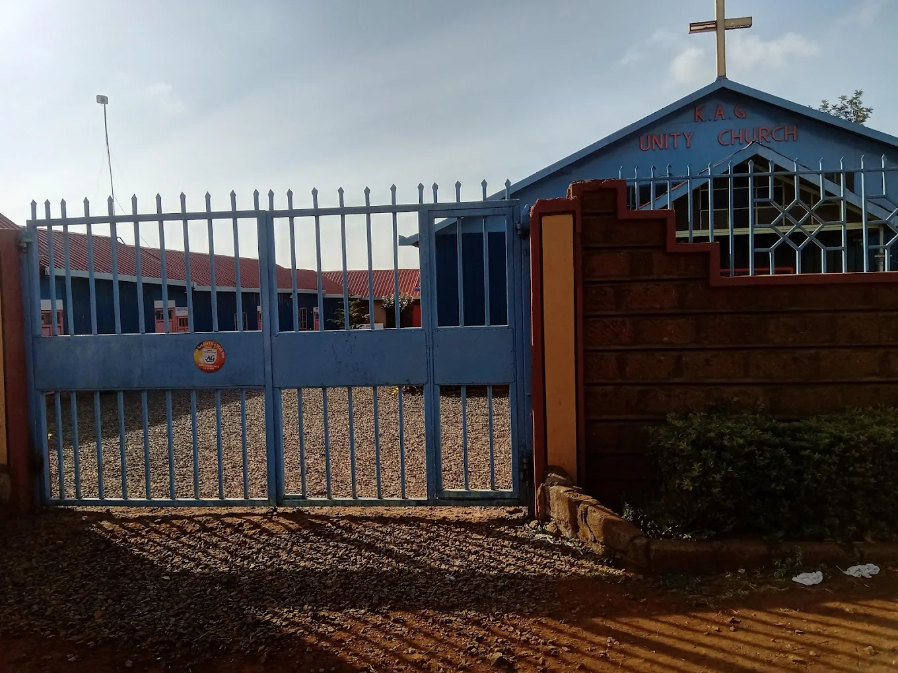

About K.A.G Unity Church

22 Google Reviews
K.A.G Unity Church is a welcoming place of worship located near Thika Super Highway in Ruiru.
Known for its peaceful environment, clean surroundings, and beautiful floral interior, it is a place where you experience God's presence and spiritual growth. We are part of the Kenya Assemblies of God — a movement rooted in faith, prayer, and community service.
Whether you are seeking salvation, spiritual growth, or simply a warm community of believers, you are welcome here. Our doors are open to all — come as you are.
Faith
Rooted in the Word of God and anchored by unwavering belief in Jesus Christ.

Community
A welcoming family bound together by love, care, and fellowship.
Worship
Passionate, spirit-filled worship that ushers you into God's presence.

The Word
Bible-centred teaching that transforms hearts and renews the mind.